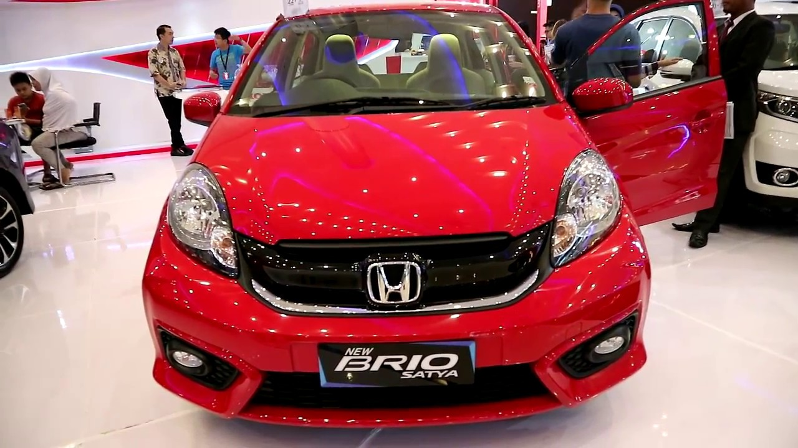

SALAM OTOMOTIF!...
Selamat Datang di PetrolGarage dengan website ini dapat memudahkan anda dalam memilih berbagai
pilihan mobil dan memberi informasi tentang mobil-mobil pilihan yang ingin anda ketahui lebih detail.
kami akan menjelaskan nya secara lengkap berdasarkan informasi yang kami dapatkan
dari berbagai sumber situs,forum otomotif,opini,dan review pengalaman pribadi.
setelah itu kami meninjau setiap detail spesifikasi dan menilai setiap aspek pada mobil lalu membagi nya dalam berbagai kriteria
kami tidak ber afiliasi dengan suatu pihak untuk keuntungan pribadi.
Berikut klasifikasi dan penjelasan setiap kriteria dari kami :
1.Peforma :
-untuk menyingkat beberapa penilaian, kami menilai kendaraan
dari segi peforma yang sudah mencakup Peforma mesin dan Akselerasi.
2.Kenyamanan :
-kenyamanan merujuk pada bantingan Suspensi,Kualitas material,Keheningan kabin,
Akomodasi hingga Kenyamanan Jok mobil.
3.Fitur :
-mencakup berbagai Fitur dan fasilitas Keamanan pada kendaraan.
4.Desain :
-mencakup setiap detail Kualitas pada eksterior mobil,dan bentuk body menyeluruh
pada kendaraan.
5.Value for Money
-hal selanjutnya yang ditinjau adalah Jaringan servis,Worth kendaraan dan Resale Value kendaraan.
6.Handling
-terakhir tidak lupa untuk meninjau handling dan sensasi mengendarai suatu mobil.
Kali ini kami akan mengulas dan membandingkan Mobil-mobil yang biasa disebut
sebagai LCGC (Low Cost Green Car).Di Indonesia sudah banyak sekali pengguna
dan peminat mobil LCGC ini dikarenakan harga yang cukup terjangkau
perawatan yang mudah dan ukuran yang simple sehingga mudah untuk digunakan kemana pun.
Langsung saja simak ulasan berikut ini.
1.Honda Brio Satya
rentang harga 115jt-130jt

Spesifikasi Honda Brio
Spesifikasi Honda Brio |
| Mesin | - Type : 1.2L SOHC 4 silinder segaris & 16 ktup i-VTEC+DBW
- Sistem Suplai Bahan Bakar : PGM-FI
- Isi Silinder : 1.198
- Diameter x Langkah : 73 mm x 88,4 mm
- Perbandingan Kompresi : 10,3 : 1
- Tenaga Maksimum : 120 PS / 6000 rpm
- Torsi Maksimum : 145 Nm / 4800 rpm
|
| Dimensi | - Panjang Keseluruhan : 3.610 mm
- Lebar Keseluruhan : 1.680 mm
- Tinggi Keseluruhan : 1.485 mm
- Jarak Poros Roda : 2.345
- Jarak Pijak Depan : 1.480 mm
- Jarak Pijak Belakang : 1.465 mm
- Ground Clearance : 165 mm
- Kapasitas Tangki BBM : 35 Liter
|
| Transmisi | |
| System Kemudi | - Sistem : Rack & Pinion with Electric Power Stering (EPS)
- Tilt & Teleskopic Steering : All Type
|
| Suspensi / Kaki-Kaki | - Suspensi Depan : MacPherson Strut
- Suspensi Belakang : H-Shape Torsion Beam
- Rem Depan : Ventilated disc
- Rem Belakang : Drum
- Ukuran Ban : 175 / 65 R14
- Velg : Steel Wheel Brio Satya A, Brio Satya S 14″, Alloy Wheel 14″ Brio E A/T
|
| Eksterior | - Front lamp : Halogen Headlight
- Fog lamp : Halogen Headlight untuk type brio E dan brio E A/T
- Door Mirror : Black color
- Door Handle :Black color
|
| Interior | - Audio : Single DIN AM/FM Radio, Single Disc MP3?WMA + USB Port + AUX Input untuk type Brio Satya A, S, E Dan Double DIN AM/FM Single Disc MP3/WMA, CD Player + USB port + AUX input + Made for iPhone + Bluetooth
|
| Fitur Keselamatan / Keamanan | - Struktur kerangka body : G-CON + ACE
- Side Impact Baem : All Type
- Padestrian Protection : All Type
- Dual Front Air bags : All Type
- Sabuk keselamatan depan : Seatbelt 3P ELR (x2) all Type
- Sabuk Keselamatan belakang : Seatbelt 3P ELR (x2) all Type
- Pretensioner with load Limiter Seatbelt : All type
- Key Type : Wave Key All type
- Keyless entry : Untuk Brio S A/T dan Brio E A/T
- Alarm System : Untuk Brio S A/T dan Brio E A/T
|
2.Suzuki Karimun Wagon
rentang harga 105jt-130jt
Spesifikasi Suzuki Karimun Wagon R
Spesifikasi Suzuki Karimun Wagon R |
| Mesin | - Seri mesin : K10B, DOHC
- Kapasitas Silinder : 998 cc
- Jumlah Silinder : 12-valve engine
- Jumlah Katup : 12
- Diameter x Langkah : 73 x 79.5 mm
- Perbandingan Kompresi : 1:10
- Tenaga Maksimum : 68 ps / 6200 rpm
- Torsi Maksimum : 90 Nm / 3500 rpm
- Sistem Bahan Bakar : Multi Point Injection
- Bahan Bakar : Bensin Tanpa Timbal
- Kapasitas Tangki bahan bakar : 35 L
- Sistem Kemudi : Electronic Power Steering with tilt steering
- Steering : Rack & Pinion
- Transmisi Tipe : 5 Speed MT
- Rasio gigi akhir : 4,388
|
| Dimensi | - Panjang Keseluruhan : 3.600 mm
- Lebar Keseluruhan : 1,475 mm
- Tinggi Keseluruhan : 1,670 – 1,700 mm
- Jarak Poros Roda : 2,400 mm
- Jarak Pijak Depan : 1,295 mm
- Jarak Pijak Belakang : 1,290 mm
- Ground Clearance : 170 mm
- Radius Putar Minimum : 4,600 mm
- Berat Kosong : 825-835 kg
- Berat Kotor : 1,350 kg
- Tempat Duduk : 5 Orang
|
| Suspensi / Kaki-Kaki | - Suspensi Depan : MacPherson Strut with coil spring
- Suspensi Belakang : 3-Links Rigid with coil spring
- Rem Depan : Ventilated disc
- Rem Belakang : Drum
- Ukuran Ban : 145/80 R13
|
| Eksterior | - New Headlamp : Multi-reflector blue eyes
- New Front Grille : Chrome
- New Fog Lamp : standard
|
| Interior | - Audio : New audio Head Unit Design (CD, DVD, MP3, Radio, USB, AUX, dan Blutooth )
- Jok : Balck Fabric Seat & Black Under Seat Tray
- Dashboard : Black
- Kabin : Spacious & Luxurious
- Cup Holder : standart
- AC : Standart
|
| Fitur Keselamatan / Keamanan | - Seat Belt Front & Rear
- Keyless Entry & immobillizer
- Alarm System
- Auto Lock System
|
3.Daihatsu Ayla
rentang harga 90jt-120jt
Spesifikasi Daihatsu Ayla
Spesifikasi Mobil Daihatsu Ayla |
| Mesin | - Tipe mesin : D26F 1KR-DE DOHC/3 cylinder, 12 Valves, DOHC
- Kapasitas Silinder : 998 cc
- Diameter X langkah : 71 x 84
- Daya Maksimum : 65 / 6.000
- Torsi Maksimum : 8.7 / 3.600
- Transmisi : 4 A/T & 5 speed M/T
|
| Dimensi | - P X L X T : 3.600 x 1.600 x 1.520
- Jarak Pijak depan/belakang : 635/515 mm
- Ground Clearance : 180 mm
- Jarak Sumbu Roda : 2450 mm
|
| Suspensi / Kaki-Kaki | - Suspensi Depan : McPherson Struts with coil spring
- Suspensi Belakang : Torsion Axle Beam
- Ukuran Ban : 155/80 R13
- Rem Depan : Disc
- Rem Belakang : Drum
|
|
| Interior | - Audio : New audio Head Unit Design (CD, DVD, MP3, Radio, USB, AUX, dan Blutooth )
- Jok : Balck Fabric Seat & Black Under Seat Tray
- Dashboard : Black
- Cup Holder : standart
- AC : Standart
|
| Keamanan | • Dual SRS Airbag
• Back Sonar (Tipe 1.0 X & 1.2 R)
• Side Impact Beam
• Immobilizer & Alarm Integrated Key
• Rear Stabilizer
• Pedal Clutch Anti Back Up |
4.Toyota Agya
rentang harga 110jt-135jt
Spesifikasi Toyota Agya
Spesifikasi Toyota Agya
Spesifikasi Mobil Toyota Agya |
| Mesin | - Tipe mesin : 1KR 12 3 Silinder sejajar, 12 katup, DOHC/3 cylinder, 12 Valves, DOHC
- Kapasitas Silinder : 998 cc
- Sisitem Suplay Bahan bakar : EFI
- Diameter X langkah : 71.0 x 84.0
- Daya Maksimum : 65.3/6000
- Torsi Maksimum : 88/3600
- Transmisi : 4 A/T & 5 speed M/T
|
| Dimensi | - P X L X T : 3.471 ×1.960 × 1.250
- Jarak Pijak depan/belakang : 1430 / 1425 mm
- Ground Clearance : 180 mm
- Kapasitas Tangki : 33 Liter
|
| Suspensi / Kaki-Kaki | - Suspensi Depan : MacPherson Struts dengan pegas koil
- Suspensi Belakang : Semi independent torsion axle beam dengan pegas koil
- Ukuran Ban : 155/80 R13 (Type E) / 175/65 R14 (Type G & TRD S)
- Rem Depan : Disc
- Rem Belakang : Drum 165
- Velg : steel & wheel cap (Type E) / Alloy Wheel (Type G & TRD S)
|
| Eksterior | - Wiper Belakang (Tipe G & TRD S)
- Aero Kit Depan Belakang (Tipe TRD S)
- Sidekirt (Tipe TRD S)
|
| Interior | - Dual SRS Air Bag (Semua Tipe)
- Air Conditioner (Semua Tipe)
- Audio (Semua Tipe)
- Power Window (Semua Tipe)
- Kaca Sepion Elektrik (Tipe G, dan TRD S)
|
5.Datsun Go
rentang harga 100jt-110jt
SpesifikasiDatsun Go Panca
Spesifikasi Datsun GO Panca |
| Mesin | - Kode : 1.2L HDR12DE
- Isi silinder : 1.198cc
- Tenaga Maksimal : 68/5000 rpm
- Torsi Maksimal : 104/4000 rpm
- Transmisi : Manual, 5 Percepatan
|
| Dimensi | - P X L X T : 3785 x 1635 x 1485 mm
- Whellbase : 2450 mm
- Ground Clearance : 170 mm
- Berat : 785 kg
|
| Suspensi / Kaki-Kaki | - Suspensi Depan : Mc Pherson Strut with Coil Spring
- Suspensi Belakang : Torsion Beam
- Rem Depan : Ventilated disc
- Rem Belakang : Drum
- Ukuran Ban : 155 / 70 R13
- Tipe Stering : Electric Power Steering (EPS) with Speed Sensitive
|
| Eksterior | - Black Honeycomb Grille with Chrome Frame
- Manual (Black) Door Mirror
- Roof Spoiler with High Mount Stop Lamp
- Mud Guard
- 155 / 70 R13 Wheel
- Halogen Head Lamp with Follow-me-home
|
| Interior | - 5 Seat Capacity
- FR Spinal Seat Support
- FR Bottle Holder
- Sunvisors
- Digital Tachometer
- Air Conditioner (Manual)
- Mobile Docking Station
|
| Fitur Keselamatan | - 1st Row Seatbelt : 3-Points ELR x 2 with pretensioner (Driver ony)
- 2nd Row Seatbelt : 3-Points x 2 + 2-Points x 1
- Immobilizer
- Central Door Locking
- Keyless Entry with Alarm
- Driver Airbag
- Parking Sensor
|
Overall Rating |
| Performa | - Honda Brio Satya
- Toyota Agya
|
| Kenyamanan | - Suzuki Karimun Wagon
- Toyota Agya
|
| Handling | - Honda Brio Satya
- Toyota Agya
|
| Desain | |
| Fitur | - Honda Brio Satya
- Toyota Agya
|
| Value for Money | - Honda Brio Satya
- Toyota Agya
|